01 V161_A38_R1 — pixel proof PASS
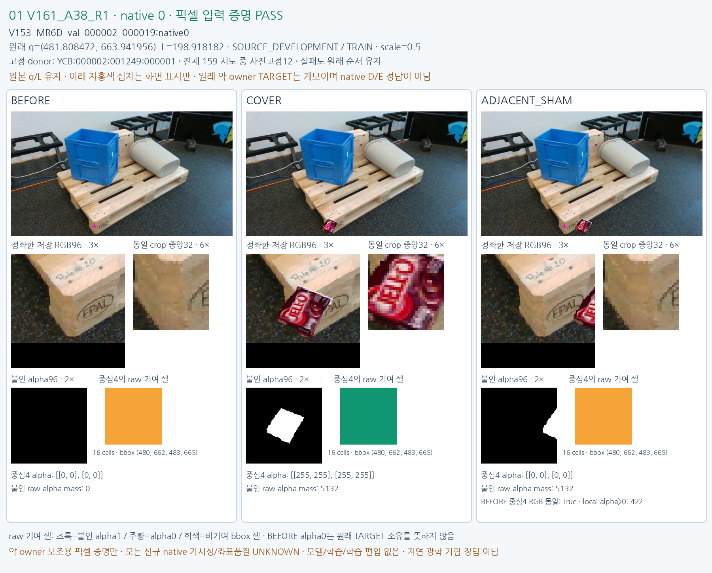
V153_MR6D_val_000002_000019:native0 · native/quality UNKNOWN · no training admission.
예측/생성 픽셀 열람 전 선정한12개이며 실패도 대체하지 않습니다. 같은 원래 q/L의 BEFORE/COVER/ADJACENT_SHAM을 표시합니다. Owner 보조용 약증명만이며 모든 신규 native 가시성/좌표품질은 UNKNOWN입니다. 모델·학습·학습 편입 및 자연 광학 가림 정답 판정은 없습니다. absent native2/3은 성공/부정 근거가 아닙니다.

V153_MR6D_val_000002_000019:native0 · native/quality UNKNOWN · no training admission.
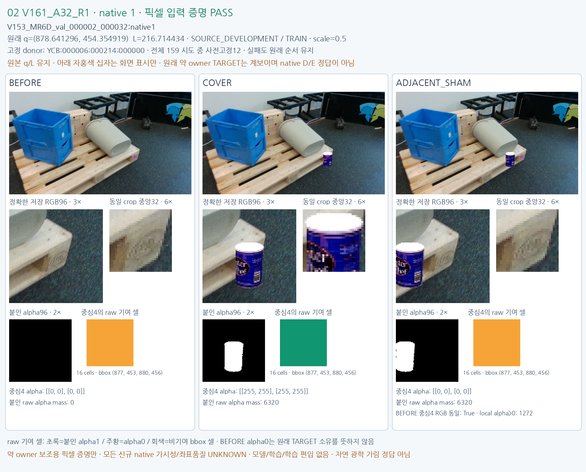
V153_MR6D_val_000002_000032:native1 · native/quality UNKNOWN · no training admission.
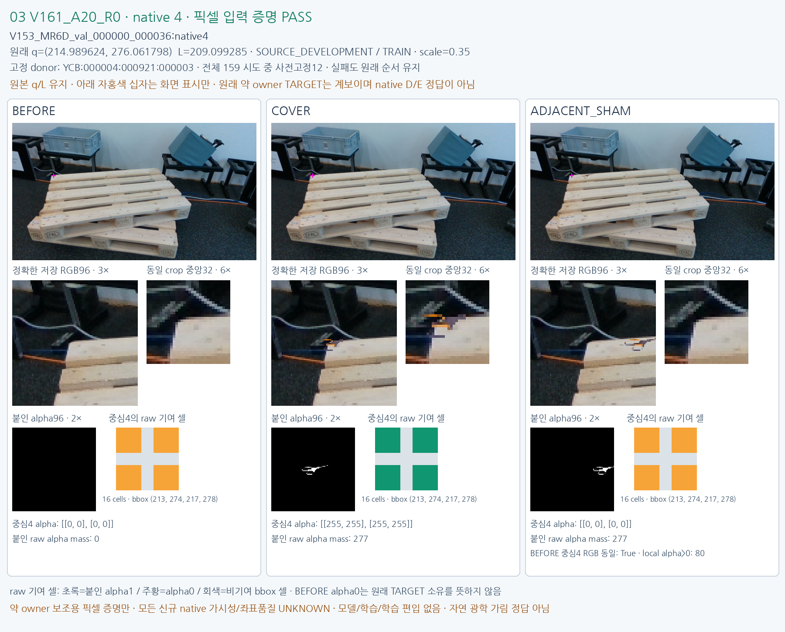
V153_MR6D_val_000000_000036:native4 · native/quality UNKNOWN · no training admission.
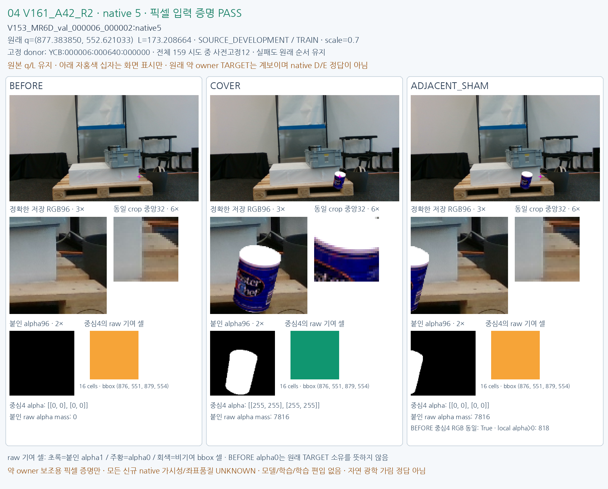
V153_MR6D_val_000006_000002:native5 · native/quality UNKNOWN · no training admission.

V153_MR6D_val_000000_000011:native6 · native/quality UNKNOWN · no training admission.
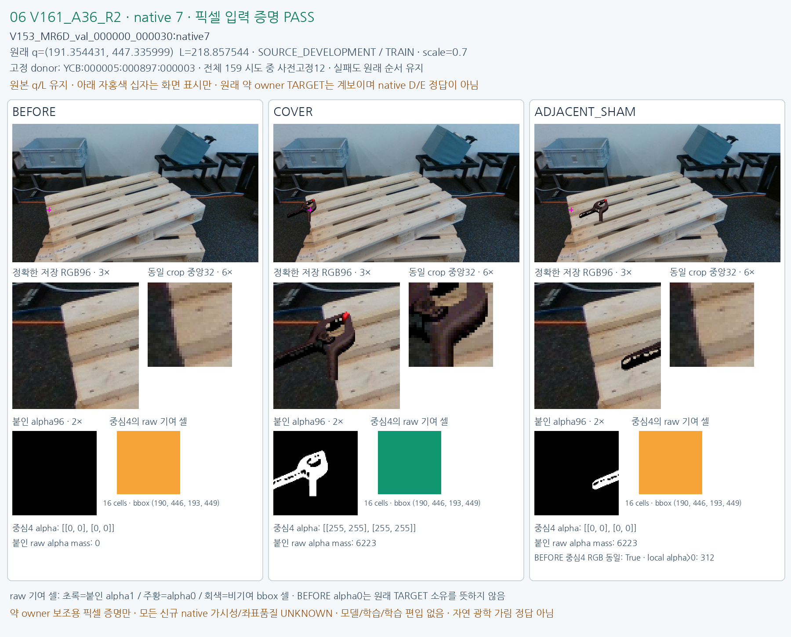
V153_MR6D_val_000000_000030:native7 · native/quality UNKNOWN · no training admission.
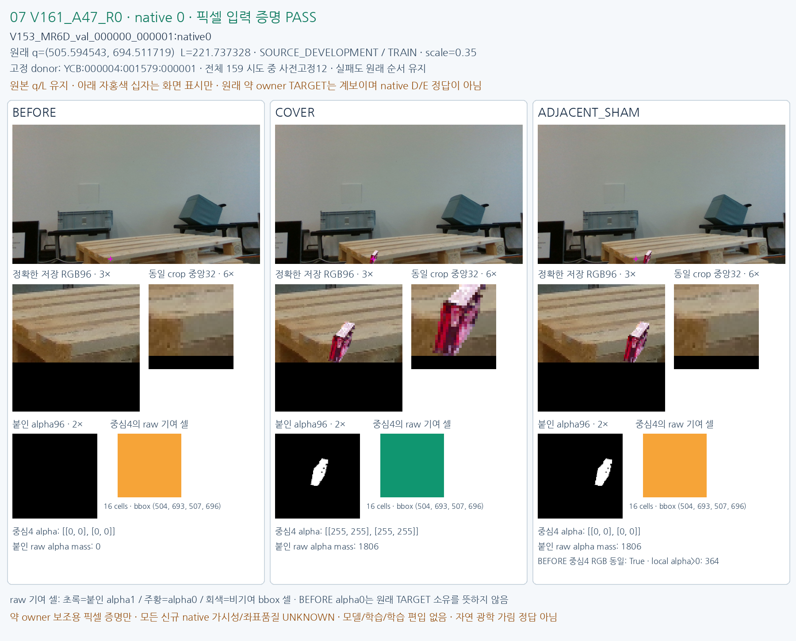
V153_MR6D_val_000000_000001:native0 · native/quality UNKNOWN · no training admission.
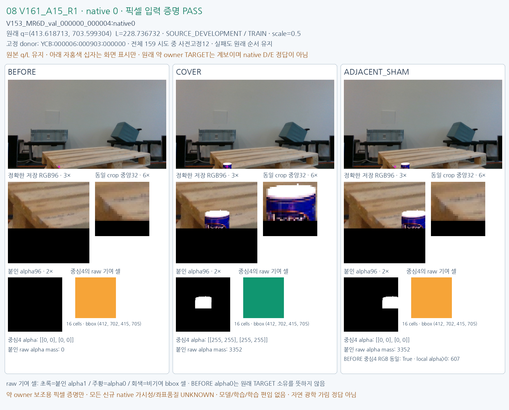
V153_MR6D_val_000000_000004:native0 · native/quality UNKNOWN · no training admission.
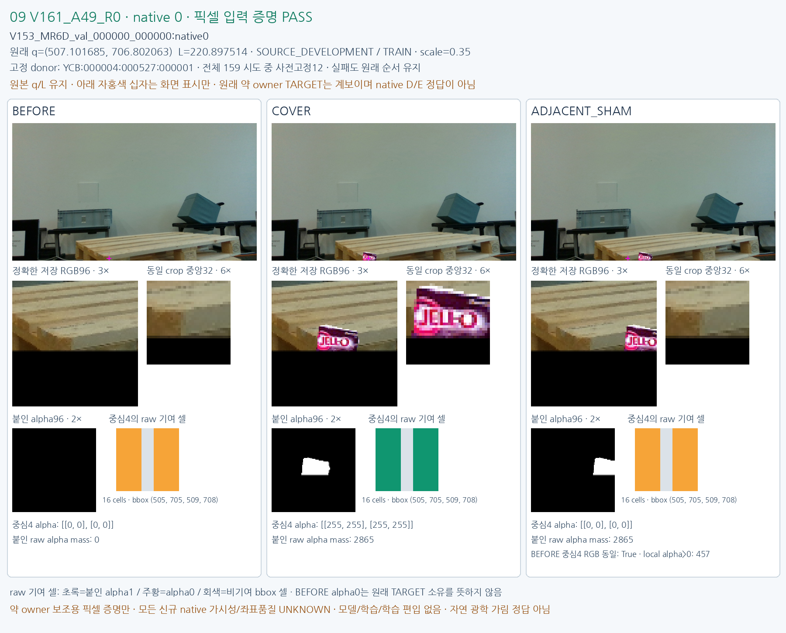
V153_MR6D_val_000000_000000:native0 · native/quality UNKNOWN · no training admission.
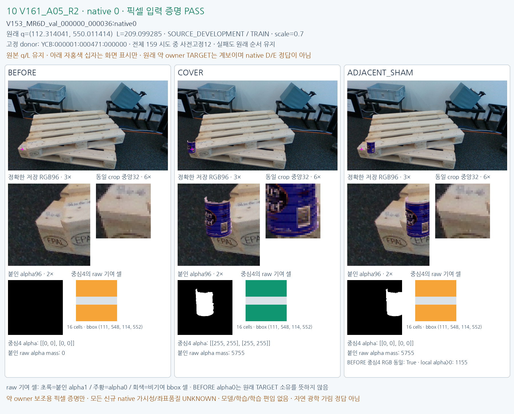
V153_MR6D_val_000000_000036:native0 · native/quality UNKNOWN · no training admission.
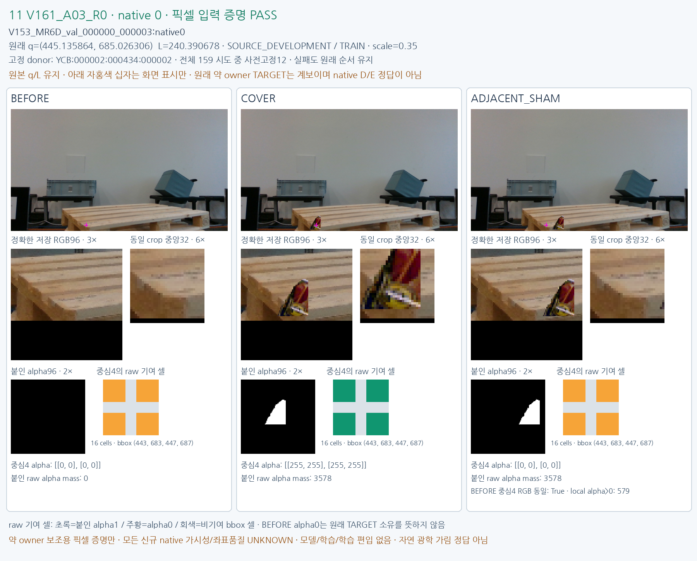
V153_MR6D_val_000000_000003:native0 · native/quality UNKNOWN · no training admission.
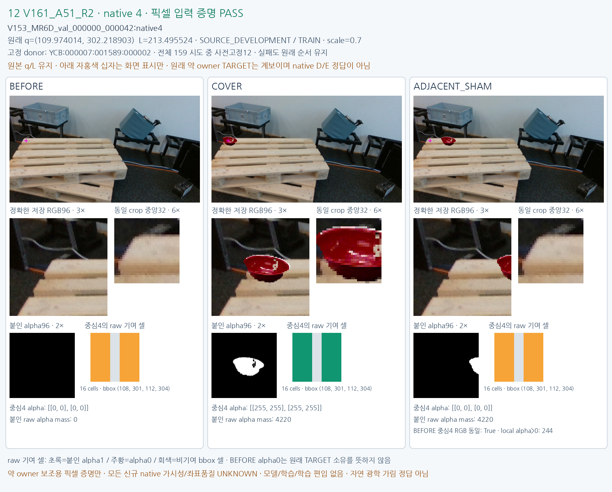
V153_MR6D_val_000000_000042:native4 · native/quality UNKNOWN · no training admission.